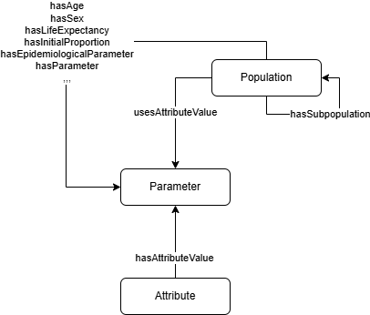

6. Population affected
The Population (osdi:Population) class defines the target cohort for the interventions under assessment. All the relevant characteristics of the individuals must be defined here, such as the distribution by sex and age, but also clinical characteristics (or patient Atributes) that may influence the progression of the disease or the effect of the intervention.

OSDi defines some default attributes: osdi:Attribute_Age, osdi:Attribute_Sex, osdi:Attribute_LifeExpectancy. Populations expect values for these Atributes by means of specific properties (osdi:hasAge, osdi:hasSex). Such values must be defined as Parameters.
For example, the base age for the population of newborns in the reference problem should be 0.
TTL Example: Definition of the age of the base population
osdi:BD_BasePopulationAge
a owl:NamedIndividual , osdi:DeterministicParameter , osdi:Parameter ;
osdi:hasDescription "Age of the base population of the screening. Assumed to be 0" ;
osdi:isValueOfAttribute osdi:Attribute_Age ;
osdi:hasExpectedValue "0.0"^^xsd:double .
The population itself would make use of these attribute values:
TTL Example: Definition of a base population
osdi:BD_BasePopulation
a owl:NamedIndividual , osdi:Population ;
osdi:hasDescription "Birth cohort targeted by BD screening" ;
osdi:hasAge osdi:BD_BasePopulationAge ;
osdi:hasEpidemiologicalParameter osdi:BD_BirthPrevalence_ProfoundBD_Spain , osdi:BD_BirthPrevalence_PartialBD_Spain ;
osdi:hasLifeExpectancy osdi:BD_BasePopulationLifeExpectancy ;
osdi:hasSex osdi:BD_BasePopulationFemaleProportion ;
osdi:hasGeographicalContext "Spain @https://www.wikidata.org/wiki/q29" ;
osdi:hasMinAge "0.0"^^xsd:double ;
osdi:hasSize 540963 .
If required, we can define subgroups of population (e.g., cases with profound BD) using the osdi:isSubpopulationOf property.
Having different Populations allows for testing the same interventions on multiple cohorts. You may characterize different populations in terms of Attributes or EpidemiologicalParameters (osdi:EpidemiologicalParameter), which capture population-level statistics like incidence or birth-prevalence. For example, you may define a population using the birth prevalence from Galicia, but also a different population with the birth prevalence from a worldwide survey (Wolf, 1991).
TTL Example (Birth Prevalence from Galicia):
osdi:BD_BirthPrevalence_ProfoundBD_Spain
a owl:NamedIndividual , osdi:DeterministicParameter , osdi:EpidemiologicalParameter ;
rdfs:label "Birth Prevalence of profound BD (Galicia NBS program)"@en ;
osdi:hasDataItemType osdi:DI_BirthPrevalence ; # Epidemiological data item type
osdi:hasExpectedValue 0.0000147885 ; # Value: 1 in 67 620
osdi:hasSource "Galicia NBS program data; Vallejo-Torres et al. 2015..."^^xsd:string ;
osdi:isParameterOf osdi:BD_BasePopulation .
TTL Example (Birth Prevalence from Worldwide survey):
osdi:BD_BirthPrevalence_ProfoundBD_Worldwide
a owl:NamedIndividual , osdi:DeterministicParameter , osdi:EpidemiologicalParameter ;
rdfs:label "Birth Prevalence of profound BD (worldwide survey)"@en ;
osdi:hasDataItemType osdi:DI_BirthPrevalence ; # Epidemiological data item type
osdi:hasExpectedValue 0.00000890702 ; # Value: 1 in 112 271
osdi:hasSource "Wolf 1991, DOI: 10.1007/BF01800475"^^xsd:string ;
osdi:isParameterOf osdi:BD_WorldwidePopulation .